モーゼル川沿いの小さな街コッヘム。 ワイン醸造と古城の街が黄葉のぶどう畑に包まれている様子を見たかったのだが今年はまだ色づきはじめだった。
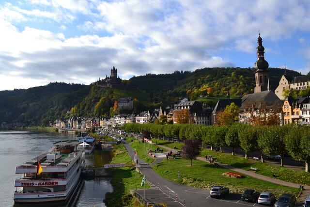
コッヘムの駅舎が目を引いた。 おそらく何度も改築と増築を繰り返してきたのだろう。 さまざまな時代の建築様式が混ざり合い溶け込んでいる。 時代の流れを感じさせる素敵な駅舎だ。統一されていれば美しいというわけではない。
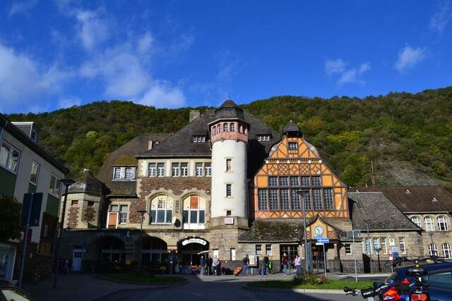
ローレライの最寄りの街。この写真に映っているのはザンクト・ゴアーから撮ったライン川対岸のザンクト・ゴアースハウゼンの街である。 三十年戦争で廃墟になった古城が並ぶライン川中流域は世界遺産の景観保持のために60kmにわたって橋がない。 その結果右岸と左岸に独立して街が成立して鉄道が走り、街並みも対岸から見た美しさが意識されている。 丘の上に立つのはネコ城。
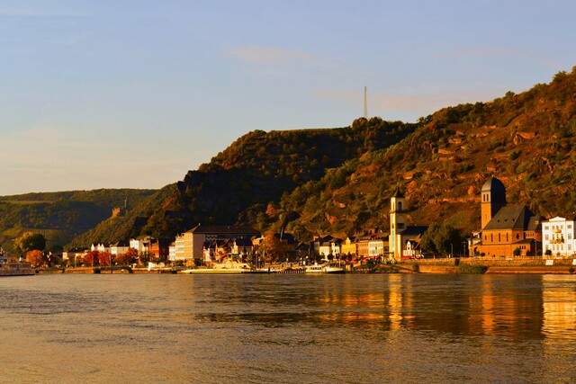
ライン川下りの拠点で賑わう街リューデスハイム。 「つぐみ横丁」と呼ばれる全長わずか150ｍほどの小さな路地にワイン醸造の街の風景が凝縮されている。通りの名前もいい。
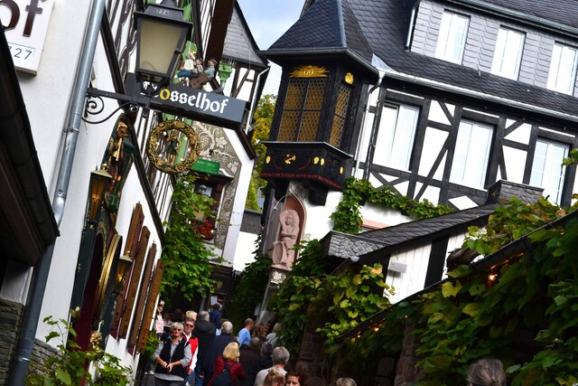
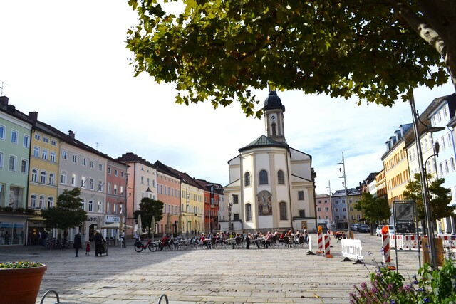
この街には「ドナウの泉」と呼ばれる湧泉があり、2850kmのドナウ川はここから始まる。始まりの場所。 実際にはこの泉は支流であり地理上の源泉はブレク川にある。
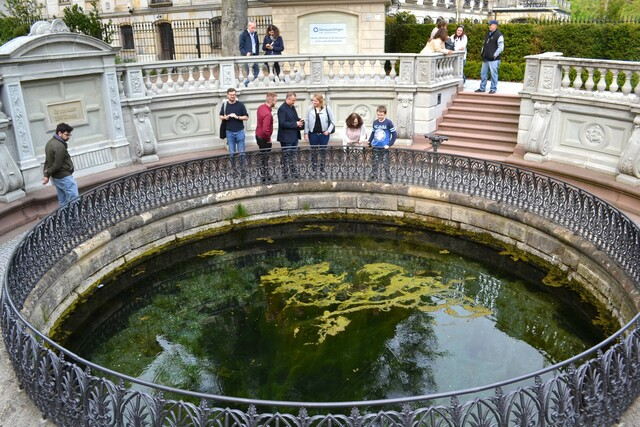
この日の南ドイツは吹雪。 こんな日は電車が乱れるので予定は立てない。 行き先も決めずにアルゴイ地方へ、気の向くままにWangenの街を訪れた。 同じ街を季節を変えて訪れるといろんな表情が見える。 花と緑に鮮やかに彩られる街も良いがモノクロームの世界に包まれひっそり佇む街も美しい。 吹雪で静まり返る街に一軒だけオレンジ色の明かりが灯っているお店があった。パン屋さんだ。
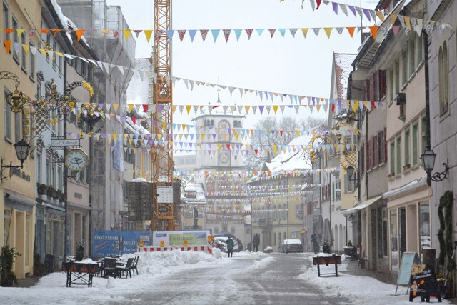
猛吹雪でほとんど街を歩けず引き返してきた駅の暖かいカフェで飲んだホットチョコレートが思い出深い。
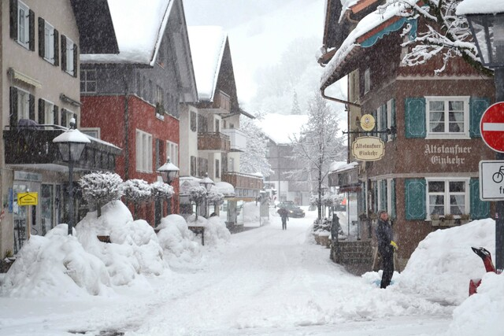
猛吹雪。こんな日でも各駅に除雪のスタッフを配置して電車を動かし続けるドイツ国鉄すごい。
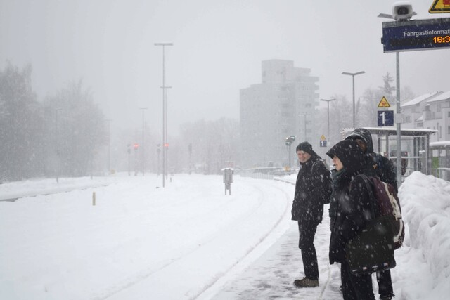
シュトゥットガルトはただの都市でいまひとつおもしろみがないのだが、 シュトゥットガルトからSバーンで20分ほどネッカー川を登ると中世様の美しい街並みに出会うことができる。 エスリンゲンの街だ。
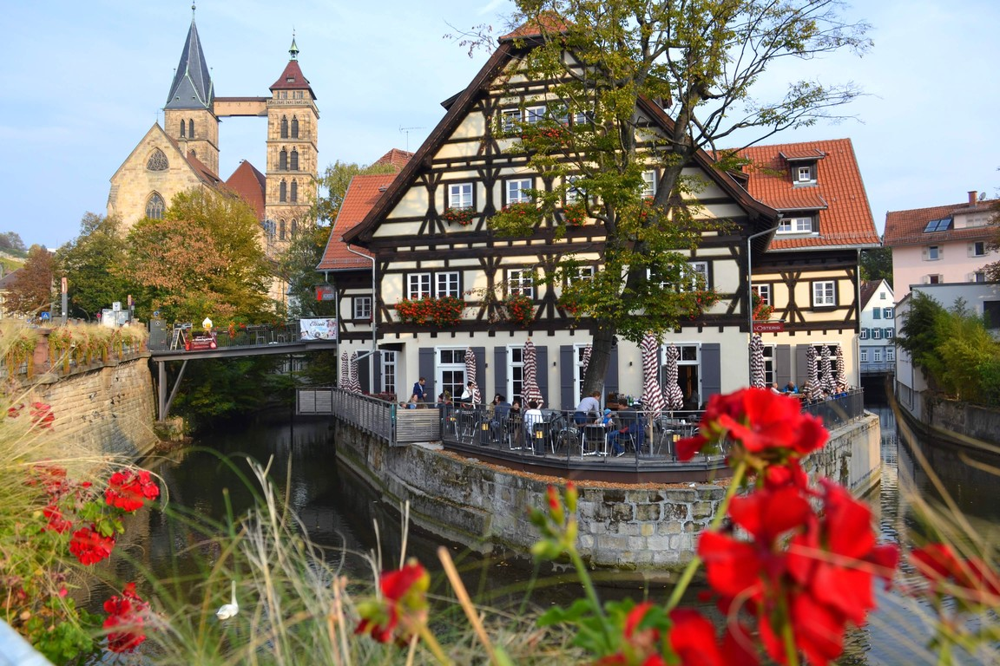
狭い路地の裏から古城の城壁に登ることができる。 城壁の下の斜面には黄金色に色付いたぶどう畑が一面に広がり、薄暮の光りに照らされていた。
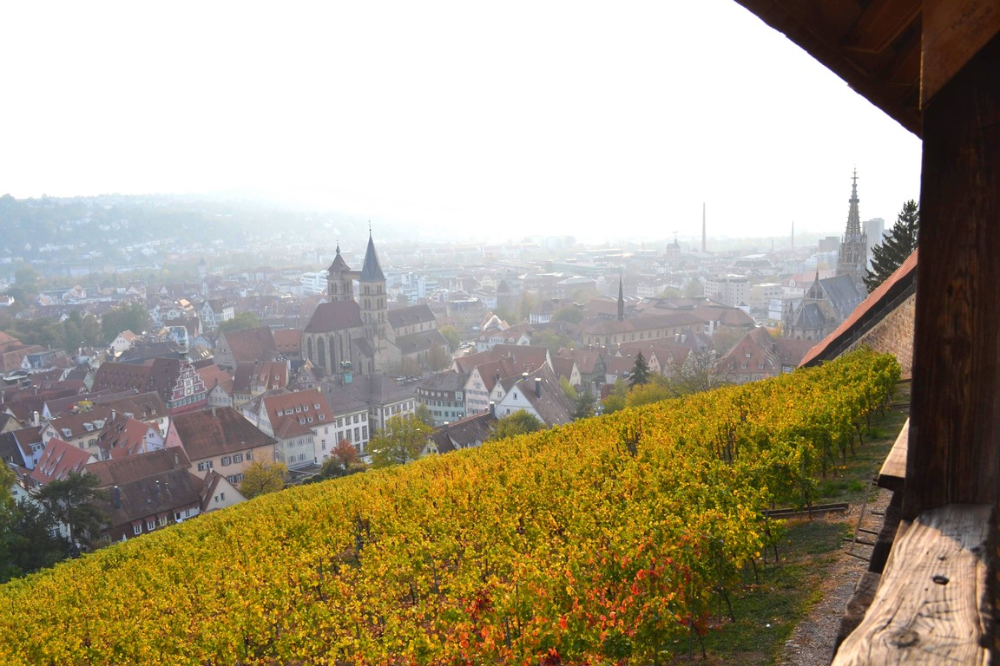
Kaiserstuhlという地方に黄葉したぶどう畑を見に行こうと向かっていたのだが、 霧が濃くて周囲は真っ白。 途中のエメンディンゲンの街をひとしきり散歩して、 この日はぶどう畑を断念し別の場所に向かうことにした。 好みの問題だが、ライン川沿いの街はフランスの文化的影響が強くいまいち惹かれるものがない。
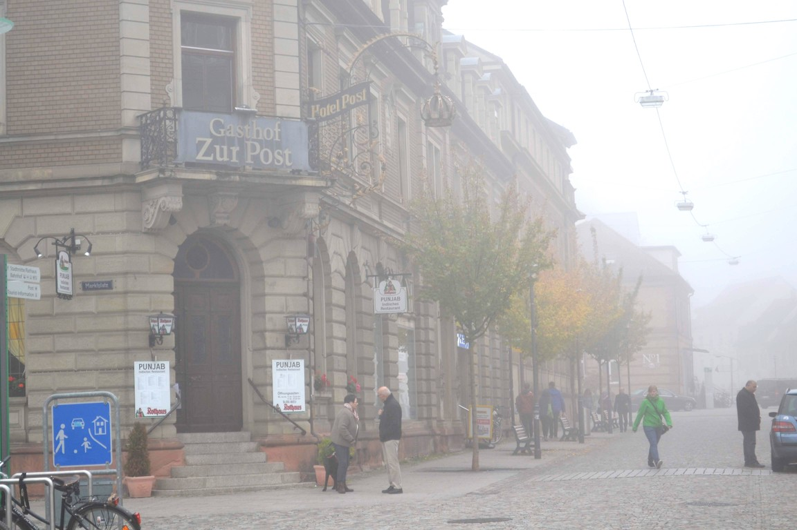
コンスタンツ湖に浮かぶ島、ライヒェナウ。 島全体が世界遺産に登録されている。 この島にはロマネスク様式の主要な修道院が3つあり、遺産の中核を成している。
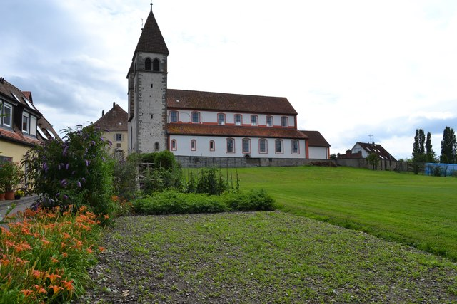
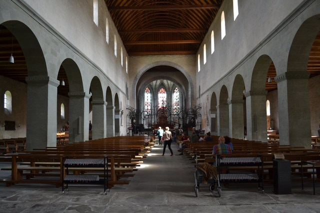
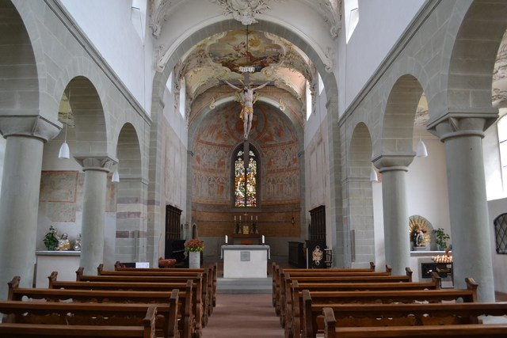
ただ、このロマネスク教会にはそれほど心を打たれたわけではなかった。 3つとも比較的シンプルな教会で、古い時代の壁画などは残されていたものの、 ロマネスク美術や教会建築としての美しさに満ちているという感じではなかった。 調べてみると、ライヒェナウの修道院はその歴史上の意義が重要だということだ。 デンマークのイェリング墳墓群のところでも書いたが、 あくまでも世界遺産は保全を目的としたものであって、観光目的のものではない。
ライヒェナウ島では島全体にさまざまな野菜の畑が広がっていて、地産地消の生活が行われている。
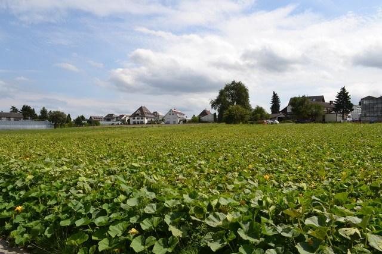
シュタインハウゼンの巡礼教会に行く途中で寄った街。 バスの乗換に50分ほどあったので散歩してみた。 アルゴイ地方の街らしく、くっきりした明るい赤茶色の切妻屋根に真っ白な漆喰の壁の家が立ち並ぶ。 そこに広がる真っ青な空。 滞在時間は短かったし、小さい街でとくに何があるというわけでもないのだけど、この街の美しさは何度も思い出す。
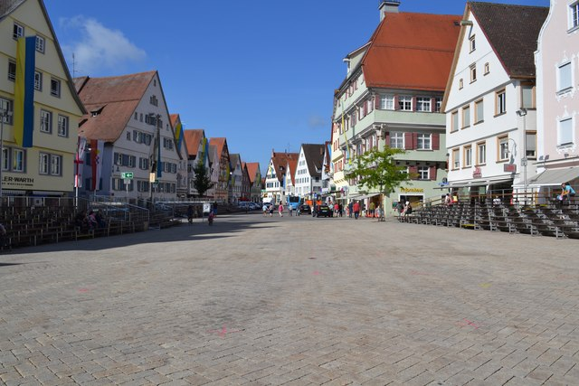
南ドイツの街には、市場の文化が根強く残っている。 地元の人たちが自分たちが作ったものを売り、地元の人たちが買っていく。 観光目的でやっている市場ではなく、地元の人たちが地元の人たちのためにやっている市場だ。 （ミュンヘンのViktualienmarktでも似た雰囲気が味わえるが、あそこは観光目的でやっている市場である。） 野菜、果物、肉、チーズ、洋服、木工細工・・・。 農村共同体の牧歌的な光景がここには残っている。 南ドイツで小さな街を訪れるのは、できれば日曜日よりも土曜日を選ぶ。 なぜなら、日曜日には市場がお休みで、この光景を見られないからだ。
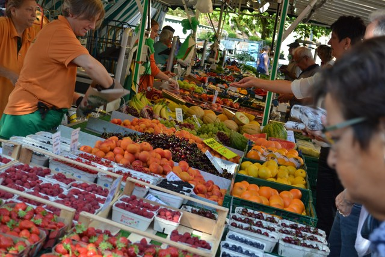
シュタインハウゼンの巡礼教会に行くときに寄った小さな街。 ミュンヘンからシュタインハウゼンに行くのは相当大変で、 1日数本しかない（曜日によっては1本もない）路線バスを乗り継がないといけない。 オクセンハウゼンで乗り継ぎの時間が1時間あったので、街の中を散歩してみることにした。
オクセンハウゼンには立派な修道院がある。 内部は美しいロココ装飾が散りばめられている。 この日は日曜日でミサが行われていて、修道院の内部には村人の合唱が響いていた（写真を撮るのは控えました）。
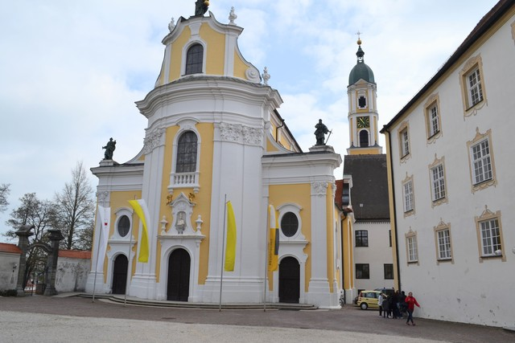
さて、このオクセンハウゼンからシュタインハウゼンまで路線バスで行く予定だったのだが、 時間を過ぎてもバスが来ない。 バス停の時刻表をよく見てみたところ、Rufbus（呼び出しバス）と書いてある。 これ、マウルブロン修道院のときに見たやつで知ってるぞ・・・ 事前に電話で予約しておかないとやって来ないバスだ。。。
シュタインハウゼンまでは5.5kmほどある。 だが、「世界一美しい農村の教会」を見るためなら仕方ない。 歩いて行くことにした。
どこまでも広がる春の牧草地と菜の花畑。この道をひたすらてくてく歩く。 トレッキングをしているドイツ人の方々がすれ違いざまにあいさつしてくれるが、 ビジネスバッグを持ってこんな場所を歩いている日本人はさぞおかしく見えることだろう。 この写真の一番奥に映っている小さな集落に見えるぽつんとした塔が目的地だ。
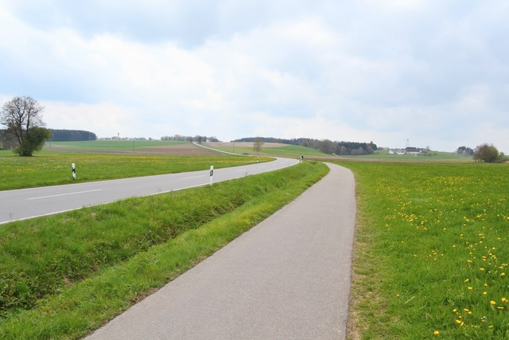
やっと教会がすぐそこまで来た。
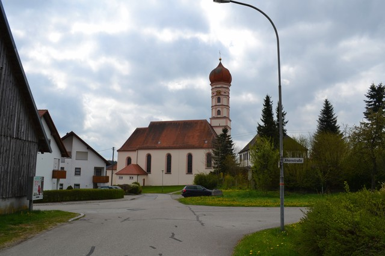
ところがである。教会の入口のドアを開けた瞬間、「あれ、ロココ装飾がないよ？？？」
何が起きたかわからず教会の周囲をぐるぐるしていると、 掲示板にこんな張り紙を発見。 「このシュタインハウゼンは、おそらくあなたの行きたかったシュタインハウゼンではないでしょう。 あなたの行きたかったシュタインハウゼンはここから24km離れています。」
！！！！！！！！！！ひぇっっっ！
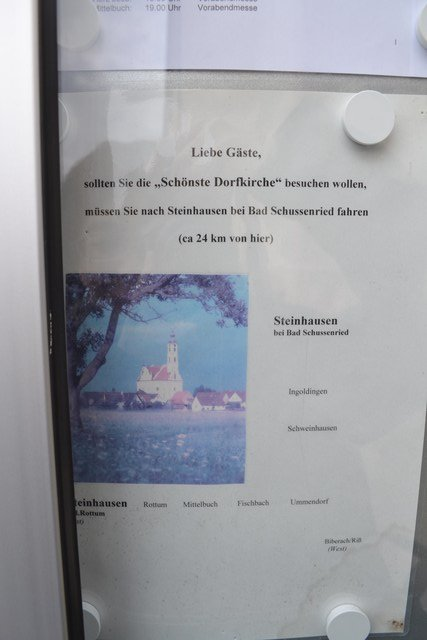
ドイツには同名の街がたくさんある。 4年前にローテンブルクに行くときも同じトラップに引っかかって、 まったく違うローテンブルクに辿り着いて、車掌さんから素敵なパンフレットをもらったんだった。
まぁよい。これが「フィールドワーク」としての南ドイツ散歩の醍醐味なのだ。
来た5.5kmの道を歩いて戻った。
ベルヒテスガーデンから4kmほど離れたところに、岩塩の採掘場跡を使ったテーマパークがある。 内部の撮影が禁止だったので写真はないが、トロッコで山の内部の奥まで入っていき、 実際に使われていた岩塩採掘場の洞穴を探検できる。 中には（人口の）地底湖があってそこを船で移動したり、高低差のある洞穴を長い滑り台で滑ったり、なかなかおもしろい。 なぜ地底湖があるかというと、当時の岩塩採掘法として、 ダイナマイトで地中を爆破して空間を作ったあと、大量の湧き水をそこに流し込み、 地中の岩塩が水に溶けたところで水を吸い上げて、それを乾かして塩を抽出するという方法が使われていたかららしい。 なかなか大胆な方法だと思った。
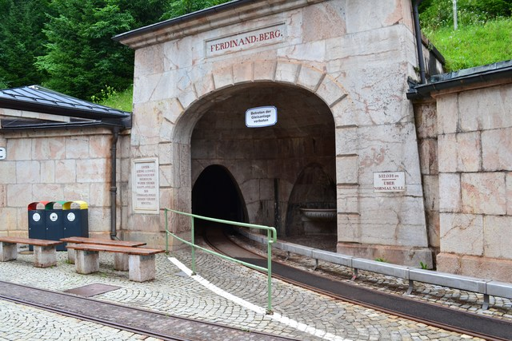